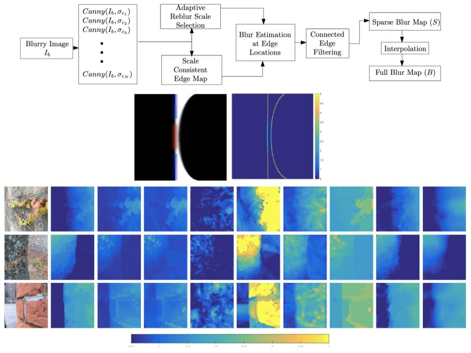

Edge-Based Defocus Blur Estimation with AdaptiveScale Selection
Abstract :
Objects that do not lie at the focal distance of adigital camera generate defocused regions in the captured image. This paper presents a new edge-based method for spatiallyvarying defocus blur estimation using a single image based onreblurred gradient magnitudes. The proposed approach initially computes a scale-consistent edge map of the input image and selects a local reblurring scale aiming to cope with noise, edge mis-localization and interfering edges. An initial blur estimateis computed at the detected scale-consistent edge points, anda novel Connected Edge Filter (CEF) is proposed to smooththe sparse blur map based on pixel connectivity within detected edge contours. Finally, a fast guided filter is used to propagatethe sparse blur map through the whole image. Experimental results show that the proposed approach presents a very good compromise between estimation error and running time when compared to state-of-the-art methods. We also explore our blur estimation method in the context of image deblurring, and showthat metrics typically used to evaluate blur estimation may not correlate as expected with the visual quality of the deblurred image.BibTeX :
@article{KaraaliJung2018,
author = {{A. {Karaali} and C. R. {Jung}},
title = {Edge-Based Defocus Blur Estimation With Adaptive Scale Selection},
journal = {IEEE Transactions on Image Processing},
volume = {27},
number = {3},
DOI = {10.1109/TIP.2017.2771563},
pages = {1126-1137},
year = {2018},}